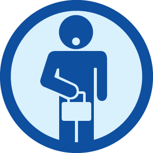

Wed, 24 Nov 2010 06:58:00 · Fourquare · TSA · travel · badges
TSA Badge courtesy of... Foursquare!

Has the TSA touched your junk? There’s a foursquare badge for that!
Wed, 24 Nov 2010 06:58:00 · Fourquare · TSA · travel · badges

Has the TSA touched your junk? There’s a foursquare badge for that!